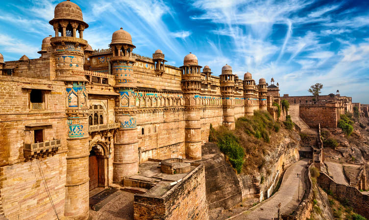

GWALIOR FORT
ORCHHA FORT
DATIA FORT
CHANDERI FORT


Gwalior Fort stands on an isolated rock, overlooking the Gwalior town, and contains a number of historic buildings. It is one of the biggest forts in India. From historical records, it is established that it was built in the 8th century.Gwalior Fort stands on an isolated rock, overlooking the Gwalior town, and contains a number of historic buildings. It is one of the biggest forts in India. From historical records, it is established that it was built in the 8th century. The fortress and the city have been integral to the history of the kingdoms of North India. It is said that the Mughal Emperor Babur (1483–1531) described it as, "The pearl in the necklace of the forts of Hind". The fort, also given the epithet "Gibraltar of India', provides a panoramic view of the old Gwalior town, which is to its east. The fort was built by Raja Man Singh Tomar in the 15th century. The fort of Gwalior has seen many ups and downs of history. In the course of almost five hundred years, the Gwalior fort went from one ruler to another. From the Tomars it passed to the Mughals, Marathas and the British. The Gwalior fort finally went to the Scindias from the British. The Teli-ka-Mandir is the most famous of all the temples of the Gwalior fort. This temple was built in the Dravidian style shrine and is notable for its generously sculpted exterior. The Saas-Bahu Temples (two pillared temples which stand next to each other, one larger than the other) are also fascinating. The Man Singh Palace is one of the most amazing palaces of the Gwalior fort. It was built by Man Singh in the 15th century. It was in the same palace the Mughal emperor Aurangzeb imprisoned and later murdered his brother Murad. Then there is gruesome Jauhar Kund, where the women of the harem burnt themselves to death after the defeat of the king of Gwalior in 1232. Other significant palaces within the Gwalior Fort include the Karan Palace, the Jahangir Mahal, the Shah Jahan Mahal and the Gujri Mahal (built by Man Singh for his favorite queen, Mrignayani). Gwalior Fort also occupies a unique place in the human civilization as the place which has the first recorded use of zero ever. Also referred as 'Shunya' in sanskrit, this site is of mathematical interest.
The exact period during which the Gwalior Fort was constructed is not yet known. According to legends, this imposing fort was built in the 3rd century by a local king Suraj Sen. The king had recently been cured of leprosy with the help and blessings of a sage named Gwalipa, who had offered him water from a sacred pond. The grateful king then built this fort and named it after the sage. The word Gwalior is derived from the saint's name- Gwalipa. The sage bestowed the title Pal, which means protector, upon the king; and declared that the fort would remain in his family's possession as long as they bore this title. Interestingly enough, the fort remained with the 83 descendants of Suraj Sen Pal, but the 84th descendant named Tej Karan lost the fort.
In the years that followed, the Gwalior Fort has witnessed many ups and downs. It also changed hands many times and has been held by the Tomars, Mughals, Marathas, and the British, before finally being handed over to the Scindias.
Surrounded by concrete walls of sandstone, the Gwalior Fort encloses three temples, six palaces and several water tanks, and is truly an architectural marvel. The different palaces and temples are a reflection of the architectural finery and skill that existed during those times and continues to be appreciated till date.
The most beautiful place in the entire premises is no doubt the Man Mandir Palace, which with its amazingly elaborate structure, seems to hang at the edge of the striking fort. Blue ceramic tiles form the facade of this breathtakingly beautiful palace. The Teli-ka-Mandir, built in the 9th-century Dravidian style, rises to a height of over 100 feet and is famous for its blend of South Indian architecture with North Indian decorative motifs, as well as an exquisitely sculpted exterior. The Saas-Bahu temples on the eastern side of the fort are also larger than life examples of the 11th-century temple architecture.
The Gwalior Fort hosts a spectacular sound and light show every evening. This show is extremely well executed and makes you feel as if you are a part of the rich history of the fort and the love story of Raja Man Singh and his queen Mrignayani.
The show takes place in the amphitheatre at the Man Mandir. The timings for the show are as follows:
Hindi Show: 7:30 PM
English Show: 8:30 PM
The best way to reach the Gwalior Fort is through auto-rickshaw which can go up to the Urvai Gate, the western entrance of the fort. There are two approaches to the fort, the second one being the eastern entrance which does not allow any vehicle. Both the paths are steep treks after one point. However, the stunning view of this striking fort from the eastern side makes the whole trip worthwhile. Make sure not to miss the beautiful rock sculptures on your way down from the western side.
India history is full of rich culture, heritage and history. Many rulers ruled on various parts of the country and they made palaces and forts for their living and palace. We are covering a palace where no one lived. We are talking about Datia Palace and it is known as Datia ka Mahal in Hindi. As per the locals, it is most haunted place of Datia city. Many rumors and stories are attached with the palace. Officially it is known as Bir Singh Palace
Bir Singh Palace is a 5 storeyed palace located on a hillock in Datia city. As per the stone inscribed in palace wall, palace was built by Budela Chief BirSingh Deo in 1620. It is also known as Purana Mahal and Nrisingh Dev Palace. It is built purely with stone and bricks. Wooden and iron did not used in the making of the palace. It is square in plan and having four octagonal towers. Palace ceiling is carved finely from inside.
The preparations started and the workers were given a task to build a beautiful palace right opposite to the king’s palace. In a short period of time that was given to them, the workers had built the Jahangir Mahal of Orchha. The emperor was welcomed there with a grand celebration on his arrival. Though Jahangir stayed there for just a night, he appreciated the beauty of the palace.
Bir Singh, who expected a better architecture that can do justice to the greatness of the King, ordered the construction of the other palace at Datia.
The palace was then built using the aesthetically meaningful designs of both Hindu and Muslim style of architecture.
.jpg)
Chanderi is a block in Ashok Nagar District. Chanderi is located strategically on the borders of Malwa and Bundelkhand. History of Chanderi goes back to the 11th century, when it was dominated by the trade routes of Central India and was proximate to the arterial route to the ancient ports of Gujarat as well as to Malwa, Mewar, Central India and the Deccan. Consequently, Chanderi became an important military outpost. The town also finds mention in Mahabharata. Shishupal was the king of Chanderi during the Mahabharata period.
Chanderi is mentioned by the Persian scholar Alberuni in 1030. Ghiyas ud din Balban captured the city in 1251 for Nasiruddin Mahmud, Sultan of Delhi. Sultan Mahmud I Khilji of Malwa captured the city in 1438 after a siege of several months. In 1520 Rana Sanga of Mewar captured the city, and gave it to Medini Rai, a rebellious minister of Sultan Mahmud II of Malwa. In the Battle of Chanderi, the Mughal Emperor Babur captured the city from Medini Rai and witnessed the macabre Rajput rite of jauhar, in which, faced with certain defeat and in an attempt to escape dishonor in the hands of the enemy, women with children in their arms jumped in a fire pit to commit suicide, which was made for this specific purpose, against the background of vedic hymns recited by the priests. Jauhar was performed during the night and in the morning the men would rub the ashes of their dead women folk on their forehead, don a saffron garment known as kesariya, chew tulsi leaves (in India tulsi leaves are placed in the mouth of a dead body), symbolizing their awareness about impending death and resolve to fight and die with honour. This method of fighting & dying for the cause of retaining honour was called "SAKA".
Chanderi Fort is a glorious piece of architecture that is situated in Ashok Nagar district of Madhya Pradesh. It is a colossal Mughal fort that looks down on the old town of Chanderi.Chanderi gained importance in the 11th century owing to its proximity to the ancient ports of Gujarat. Surrounded by picturesque hills, lakes and forests, Chanderi became a prominent military outpost during this time.
Chanderi Fort has three entrances/gates. One of the popularly known gates is Khooni Darwaza. The prisoners are believed to have been thrown from the fortification above Khooni Darwaza and their bodies shattered to pieces below. Hence, the name Khooni Darwaza which translates to 'gate soaked in blood'. There's another gate on the south-west of the fort, known as Kati Ghati. It is 59 metres in length, 12 metres in breadth and 24.6 metres in height. Johar Smarak is an area that is located right outside the fort complex. It is here that women from the Rajput kingdom are believed to have self-immolated in fire (johar) by throwing themselves into Johal Tal after Medini Rai left to fight the battle with the Mughals. There is a stone plaque that depicts this situation inside a canopy towering over Johar Tal.
There is a Samadhi near the Johar Smarak. This belongs to Baiju Bawra, a renowned and celebrated musician. Born in Chanderi, he was a student of Swami Haridas of Vrindavan. He was very much attracted to the beauty of Chanderi and composed many a song in its honour. Attested to the court of Raja Man Singh of Gwalior, Baiju Bawara is reputed for defeating Tansen, who was the court poet of Akbar. Inside the fort is a three-storied palace with a fountain and a tank in its courtyard and bastions and watchtowers in the corners. There is a masjid situated at the entrance of the fort. This masjid is believed to be from the 14th century. The masjid exhibits splendid architecture with intricately carved mihrabs and verses from the Quran.
By Rail: The nearest railway station to reach Chanderi is at Lalitpur, which is approximately 40 km on Bina-Bhopal track. One can avail direct taxi or cab to reach their hotel or guest house in Chanderi from the railway station.
By Road: Chanderi is well connected by road with other major cities like Bhopal, Gwalior, Khajuraho, and Delhi. Tourists can take either bus or book a taxi to reach their desired destination in Chanderi.
Ajaigarh was the capital of a princely state of the same name during the British Raj. Ajaigarh was founded in 1765 by Guman Singh, a bundela Rajput who was the nephew of Raja Pahar Singh of Jaitpur. After Ajaigarh was captured by the British in 1809, it became a princely state in the Bundelkhand Agency of the Central India Agency. It had an area of 771 square miles (2,000 km2), and a population of 78,236 in 1901. The rulers bore the title of sawai maharaja. He commanded an estimated annual revenue of about £15,000/-, and paid a tribute of £460/-. The chief resided at the town of Nowgong, at the foot of the hill-fortress of Ajaigarh, from which the state took its name. This fort, situated on a steep hill, towers more than 800 ft (244 m) above the eponymous township, and contains the ruins of several temples adorned with elaborately carved sculptures. The town was often afflicted by malaria, and suffered severely from famine in 1868–1869 and 1896–1897.
The state acceded to the Government of India on 1 January 1950; the ruling chief was granted a privy purse of Rs. 74,700/-, and the courtesy use of his styles and titles. All of these were revoked by the government of India in 1971, at the time when these privileges were revoked from all erstwhile princes. The former princely state became part of the new Indian state of Vindhya Pradesh, and most of the territory of the former state, including the town of Ajaigarh, became part of Panna District, with a smaller portion going to Chhatarpur District. Vindhya Pradesh was merged into Madhya Pradesh on 1 November 1956.
Ajaigarh or Ajaygarh Fort is listed among the top attractions of the region. It stands alone on a hilltop in the district of Panna and is easily accessible from Khajuraho. The fort is bordered by beautiful Vindhya Hills and provides absolutely stunning views of the Ken River. This grand fort is noted for its rich historical past and architectural beauty, which speaks volumes about the Chandela dynasty.
There is plenty to explore at the fort, which makes it a treat for history and art lovers. Reminiscent of old times, this fort has two gates (earlier there were five), two temples and two rock-cut tanks, close to the northern gate. These tanks have been named as Ganga and Yamuna.
The Bandhavgarh Fort is situated in Bandhavgarh in Umaria district of Madhya Pradesh, India. It is located on the Bandhavgarh hill, rising 811 meters above sea level at the centre of the Bandhavgarh National Park. It is surrounded by many smaller hills separated by gently sloping valleys. These valleys end in small, swampy meadows, locally known as 'bohera'. The fort is also home to many of the endangered species of Vulture in India.
Various dynasties have ruled the fort: for example, Mauryans from the 3rd century BC, Vakataka rulers from the 3rd-5th century, Sengars from the 5th century, and the Kalachuris from 10th century. In the 13th century, the Baghels took over, ruling from Bandhavgarh until 1617, when Maharaja Vikramaditya Singh moved his capital to Rewa. The last inhabitants deserted the fort in 1935.
Throughout the tour of Bandhavgarh fort, wildlife such as tigers, cubs, and deer can be seen. In addition, many rare species of birds like Malabar pied hornbill, falcons, 4 species of vultures, and tortoises swimming can also be seen. At some point one can also see vulture nests from above. The hilltop is considered best for photography of flying birds due to the advantage of being positioned at the top. This makes the Bandhavgarh fort a worthwhile addition to a Bandhavgarh National Park wildlife tour.
<100%;s of approximately 2012, it is no longer possible to visit Bandhavgarh fort, as the M.P. Forest Department is no longer granting anyone permission to do so. Only the large Vishnu statue at the base of the fort can be visited at present.
.jpg)
Dhar fort is a strategic military outpost that used to be a fortified stronghold of every ruling dynasty in central India as a tribute to their royalty. Very strangely the construction of the Dhar fort was overseen by Mohammed Bin Tuglaq of the Tughlaq dynasty, a foreign invading ruler during the 11th century AD. This is the same time around which Raja Bhoj's legendary kingdom flourished so it comes across starkly that such military fortification was not dedicated to his visionary authority. The Dhar fort lies on the summit of a small rectangular hillock situated at a short distance of about 3 km from the township center, also known by the same name. Dhar Fort is specifically located in Central India, popularly known as the region of Malwa. Dhar is a district in the expansive central Indian state, Madhya Pradesh.
The hillock on which Dhar fort lies is at an elevation from ground level allowing its sentry and military forces a strategic advantage of over any invading forces. There sources used to construct this Fort is obtained from a small embankment comprising of black stone, red stone and solid murams. The principal entry way of the fortress stands facing the west. Dhar has always been the centre of significant and prominent military revolutions right since its inception. During mutiny resulting in the Great Sepoy Mutiny revolt of 1857, this fortress was the stronghold of Indian revolutionaries and as a display of their power held captive between the months of July and October. The Dhar fort complex holds many other artefacts of historic interest and importance such as the iconic ceremonial halls Kharbuja Mahal and the Sheesh Mahal.
By Air: The nearest airport is Devi Ahilyabai Holkar National Airport in Indore, which is around 64 km away from Dhar. The airport has good connectivity with other major cities like Delhi, Mumbai, Ahemdabad, Kolkata, Nagpur, Bangalore, and Hyderabad. Tourists can easily avail a taxi or a cab from this airport to reach their desired destination in Dhar.
By Rail: The nearest railway station that connects Dhar to rest of the country are located in Ratlam and Indore. These two stations are further connected to cities like Mumbai, Pune, Nagpur, Delhi, Jaipur, Ahmedabad, Vadodara, Howrah, Bhopal, Ujjain, Gwalior, Bhind, Jabalpur, Bilaspur, Khandwa, Lucknow, Varanasi, Patna, etc. There are frequent taxis and buses from the railway station to reach Dhar.
By Road: Dhar is very well connected to other major cities like Indore, Gwalior, etc. and there are regular buses from these cities to reach Dhar.
According to a Sanskrit inscription of 555 A.D, the History of Mandu goes back to the 6th century when it was a fortified city. It was later named Mandhavgarh in the 10th or 11th century, by the rulers of the Parmara kingdom. In the year 1261, even the capital of the Parmaras was transferred from Dhar to Mandu. Later still, in 1305, the Parmars were captured by the Khiljis. Dilawar Khan, the Afghan ruler of Malwa, renamed the place from Mandu to Shadiabad.
It was in the hands of Hoshan Shah (1405-35) that Mandu reached to heights of glory. Under his rule, came up the magnificent buildings and structures of Mandu which later went on to become the major tourist attractions of the city. The son of Hoshan Shah, however, was on the throne for barely a year when he was poisoned to death by Mohammad Shah, the next successor to the throne. After a reign of 33 years, full of ups and downs, feuds and skirmishes, his son, Ghiyas-ud-din took the reins in the year 1469 and ruled for 31 years when his son poisoned him to death in lust of the throne. However, he could rule for only 10 years, an unhappy one, though, till Mandu went to the hands of Bahadur Shah of Gujarat in 1526.
Bahadur Shah was defeated by Humayun in 1534, but with the departure of Humayun, the city slipped into the hands of an officer from the earlier dynasty. Later on, Baz Bahadur seized the city of Mandu in 1554. However, he was also scared off by the advent of the great emperor, Akbar. Then the History of Mandu took a turn as it gradually passed on to the Marathas in 1732. At this point of time, the capital city was reassigned to Dhar and Mandu almost remained uninhabited.
Owing to the long reigns of the Muslims in this part of the country, Mandu houses several Islamic architectural specimens in the constructions. They were, however erected by using stones salvaged from the destroyed Hindu temples.
BY AIR
The nearest airport is at Indore, 99 km away. Regular flights connect Indore with Delhi, Mumbai, Gwalior and Bhopal.
BY TRAIN
Ratlam is the nearest railhead (124 km) on the Delhi-Mumbai main line. Ratlam is a major station and almost all trains stop at the station.
BY ROAD
Mandu is connected with other cities by a good road network. Regular bus services connect Mandu with Dhar, Indore, Ratlam, Ujjain and Bhopal.
In the late eighteenth century, Maheshwar served as the capital of the great Maratha queen Rajmata Ahilya Devi Holkar. She embellished the city with many buildings and public works, and it is home to her palace, as well as numerous temples, a fort, and riverfront ghats (broad stone steps which step down to the river).
Maheshwar is believed to be built on the site of the ancient city of Somvanshya Shastrarjun Kshatriya, and was the capital of king Kartavirya Arjuna, (Shree Shastrarjun) who is mentioned in the Sanskrit epics Ramayana and Mahabharata. According to a popular legend, one day the King Sahasrarjun and his 500 wives went to the river for a picnic. When the wives wanted a vast play area, the King stopped the mighty river Narmada with his 1000 arms. While they were all enjoying themselves, Ravana flew by in his Pushpak Vimana. Downstream, when he saw the dry river bed, he thought it was an ideal place to pray to Lord Shiva. He made a Shivalinga out of the sand and began to pray. When Sahasrajuna's wives were done playing and they stepped out of the river bed, he let the waters flow. The voluminous river flowed down sweeping Ravana's Shivalinga along, messing up his prayers. Furious, Ravana tracked Sahasrajuna and challenged him. Armed to the hilt the mighty Ravana was in for a huge surprise. The mighty Sahasrarjuna with the 1000 arms pinned Ravana to the ground. Then he placed 10 lamps on his heads and one on his hand. After tying up Ravana, Sahasrarjuna dragged him home and tied him up to the cradle pole of his son. A humiliated Ravana stayed prisoner until his release was secured. Jamadagni rishi, Renuka Devi and Lord Parashurama with whom Kartavirya Arjuna's story is closely associated also lived nearby.
BY AIR
Nearest airport is the Devi Ahilyabai Holkar International Airport. The nearest airport is at Indore; located about 91 km from Maheshwar. The airport is well connected by flights to cities like Mumbai, Delhi and Bhopal. From the airport, visitors can hire a taxi to reach Maheshwar.
BY TRAIN
The nearest railhead is at Barwaha; located about 39 km from Maheshwar. Indore is the nearest major railhead. Trains from Mumbai, Delhi, Bhopal and many other Indian cities halt at the station. From the station, visitors can hire taxi for Maheshwar.
BY ROAD
Maheswar can be reached easily by road. Several state-run buses do ply regularly from Indore, Bhopal, Khandwa, Dhar, Dhamnod and many other cities of Madhya Pradesh.
.jpg)


.jpg){kind=link}
.jpg){kind=link}
.jpg){kind=link}
.jpg){kind=link}
.jpg){kind=link}
.jpg){kind=link}
.jpg){kind=link}
.jpg){kind=link}
.jpg){kind=link}
.jpg){kind=link}
.jpg){kind=link}
.jpg){kind=link}
.jpg){kind=link}
.jpg){kind=link}
.jpg){kind=link}
.jpg){kind=link}
.jpg){kind=link}
.jpg){kind=link}
.jpg){kind=link}
.jpg){kind=link}
.jpg){kind=link}
.jpg){kind=link}
.jpg){kind=link}
.jpg){kind=link}
.jpg){kind=link}
.jpg){kind=link}
.jpg){kind=link}
.jpg){kind=link}
.jpg){kind=link}
.jpg){kind=link}
.jpg){kind=link}
.jpg){kind=link}
.jpg){kind=link}
.jpg){kind=link}
.jpg){kind=link}
.jpg){kind=link}
.jpg){kind=link}
.jpg){kind=link}
.jpg){kind=link}